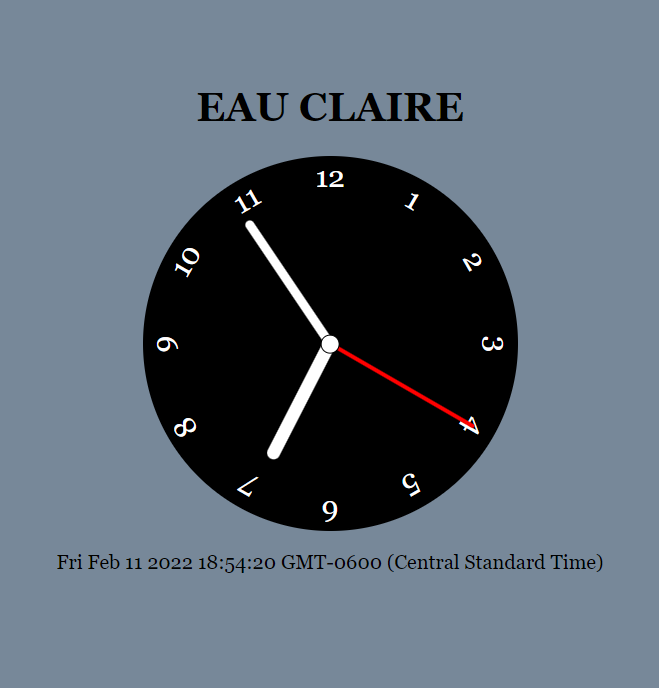
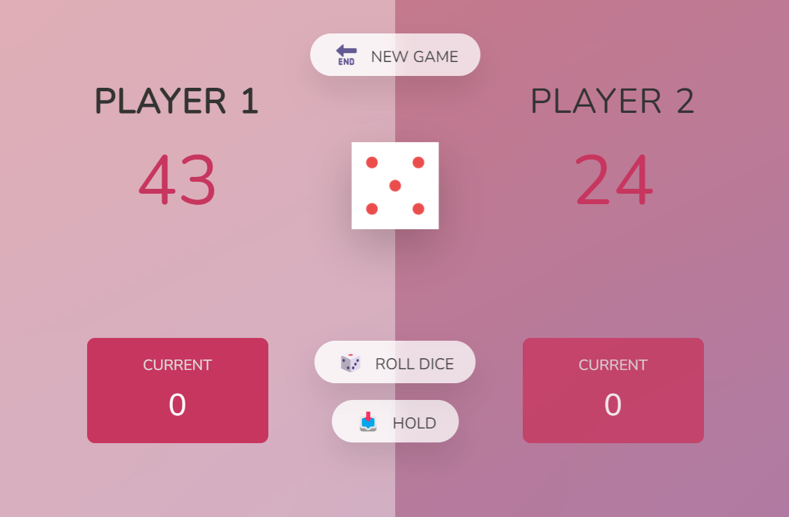
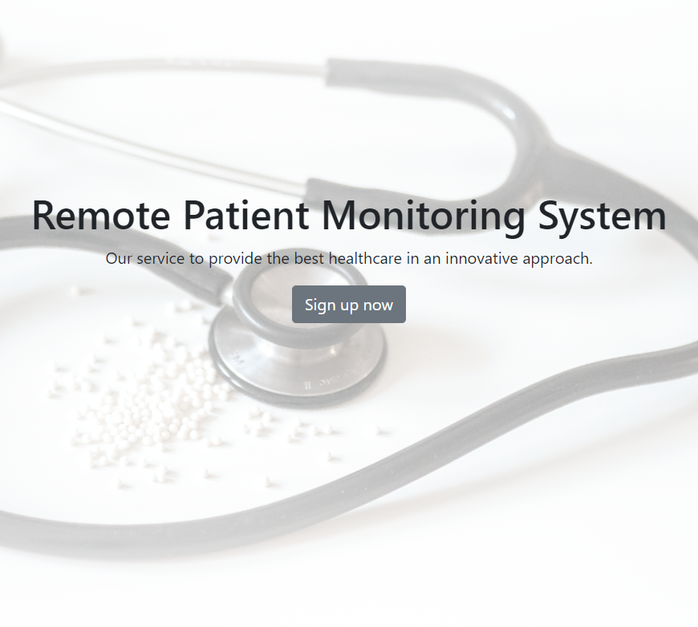

Real Time Clock
Built a live clock UI with JavaScript logic and CSS-styled clock hands.
Source CodeI enjoy building responsive, user-friendly web apps with React and TypeScript.

Built a live clock UI with JavaScript logic and CSS-styled clock hands.
Source Code
Developed a two-player turn-based game with custom game rules and state handling.
Source Code
Worked on front-end healthcare interfaces and connected pages with HTTP requests.
Private ProjectAs a Computer Science graduate, I explored a range of programming languages and found my strongest interest in front-end development. Building user interfaces has had a major impact on my career direction. I focus on delivering products that align with client goals and user needs, while creating visuals that feel clean, professional, and easy to use.
Open to frontend opportunities and collaboration.
You can also find me on: